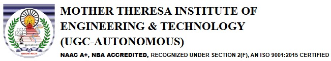

International Conference on Green Computing, and Environmental Sustainability using Artificial Intelligence ICGESAI 2025
March 20-21, 2025
Hybrid Mode
Conference Proceedings
Submission is now open: Till December 15, 2024
ICGESAI 2025 CALL FOR PAPERS
About Conference
The International Conference on Green Computing and Environmental Sustainability using Artificial Intelligence (ICGESAI) 2025 is a global platform for researchers, academicians, industry experts, and policymakers to discuss and explore innovative approaches in the fields of green computing and environmental sustainability. The conference emphasizes the integration of Artificial Intelligence (AI) to tackle pressing environmental challenges, promote sustainable technologies, and foster eco-friendly innovations
Objectives
The International Conference on Green Computing and Environmental Sustainability using Artificial Intelligence (ICGESAI) 2025 aims to bring together experts from academia, industry, and government to advance research and innovation in green computing and environmental sustainability. The objectives of the conference include:
Promote Green Computing
Encourage the development and adoption of energy-efficient computing technologies, hardware, and algorithms to reduce carbon footprints in IT systems.
Leverage AI for Sustainability
Explore AI-driven strategies for addressing critical environmental challenges, including climate change, biodiversity loss, and resource management.
Foster Interdisciplinary Collaboration
Provide a platform for cross-disciplinary interaction among researchers, engineers, environmentalists, and policymakers to drive holistic solutions
Showcase Innovations
Highlight cutting-edge research and applications in renewable energy, waste management, sustainable agriculture, and eco-friendly manufacturing powered by AI.
Bridge Research and Practice
Facilitate knowledge transfer between academia and industry to translate theoretical advancements into practical, real-world applications.
Encourage Policy Discussions
Engage policymakers and stakeholders to discuss regulatory frameworks and ethical considerations for the deployment of green computing and AI technologies.
Raise Awareness
Increase awareness about the role of technology in achieving the United Nations’ Sustainable Development Goals (SDGs).
Build a Sustainable Future
Inspire new ideas and collaborations to create a sustainable and eco-conscious global ecosystem through innovation and technology.
Outcomes
The International Conference on Green Computing and Environmental Sustainability using Artificial Intelligence (ICGESAI) 2025 is expected to yield significant outcomes that will contribute to advancing research, innovation, and practical applications in green technologies and sustainable development. The anticipated outcomes include:
Knowledge Dissemination:
Publication of high-quality research papers and findings in indexed journals or conference proceedings, providing a valuable resource for academia and industry.
Technological Advancements:
Introduction of innovative AI-driven solutions for environmental sustainability, such as energy-efficient computing systems, climate modeling tools, and smart resource management techniques.
Interdisciplinary Collaborations:
Establishment of partnerships among researchers, technologists, environmentalists, and policymakers, fostering interdisciplinary projects and solutions.
Policy Recommendations:
Development of actionable policy frameworks and guidelines for integrating green computing and AI into national and international sustainability initiatives.
Capacity Building:
Skill enhancement for participants through workshops, tutorials, and discussions on emerging trends in AI and green technologies.
Industry-Academia Synergy:
Strengthened connections between academia and industry, leading to the commercialization of research and adoption of sustainable innovations.
Awareness and Advocacy:
Increased awareness about the importance of green computing and the potential of AI in addressing global environmental challenges.
Roadmap for Sustainable Development:
Creation of a strategic roadmap for leveraging AI and green technologies to achieve the United Nations’ Sustainable Development Goals (SDGs).
Networking Opportunities:
Facilitation of global networking among thought leaders, innovators, and stakeholders, encouraging long-term collaborations.
Actionable Insights:
Practical insights and strategies for businesses and governments to implement eco-friendly practices and adopt sustainable computing solutions.
Scope
The International Conference on Green Computing and Environmental Sustainability using Artificial Intelligence (ICGESAI) 2025 will encompass a broad range of topics and areas of focus, reflecting the interdisciplinary nature of its themes. The scope of the conference includes but is not limited to:
Green Computing
Development of energy-efficient computing systems and architectures.
Low-power hardware design and sustainable data center operations.
Optimization techniques for reducing the environmental impact of IT infrastructures.
Resource-efficient software engineering and green software design.
Artificial Intelligence for Environmental Sustainability
AI-driven climate change modeling and mitigation strategies.
Machine learning applications for renewable energy management.
Predictive analytics for waste reduction and recycling.
AI in biodiversity monitoring and conservation.
Renewable Energy and Smart Grids
Integration of AI in optimizing solar, wind, and hydro energy systems.
Intelligent grid management and demand-side energy management.
Innovations in battery storage and energy harvesting techniques.
Sustainable Urban Development
Smart city technologies powered by AI for efficient urban planning.
Intelligent transportation systems and eco-friendly mobility solutions.
AI applications in sustainable water and waste management.
Circular Economy and Sustainable Manufacturing
AI in optimizing resource usage and promoting recycling in manufacturing.
Sustainable supply chain management using predictive analytics.
Designing eco-friendly products with the aid of AI and digital twins.
Environmental Monitoring and Risk Management
AI-based early warning systems for natural disasters.
Monitoring air, water, and soil quality using IoT and AI.
Mitigating environmental risks through data-driven decision-making.
Ethics and Policy in AI and Sustainability
Ethical considerations for deploying AI in environmental contexts.
Policy frameworks for green computing and sustainable AI applications.
Addressing the digital divide and promoting inclusive innovation.
Cross-Disciplinary Applications
Role of green computing and AI in agriculture and food security.
AI-enhanced health monitoring systems in relation to environmental impacts.
Interdisciplinary studies bridging environmental science, computing, and AI.
This scope provides a comprehensive platform for academic and industry contributions, ensuring wide-ranging discussions and impactful outcomes that address the intersection of technology, sustainability, and artificial intelligence.
Important Dates / Deadlines
Event
Date
Manuscript submissions open
December 25th, 2024
Deadline for submissions
January 15, 2024
Under review timeline
January 16, 2024 - January 31, 2025
Notification of acceptance
February 05, 2025
Author registration deadline
February 06th to March 07th, 2025
Conference Program scheduled
March 20th, 21st, 2025
Final revised manuscript
April 5th, 2025
Important Dates / Deadlines
Event
Manuscript submissions open
Date
December 25th, 2024
Event
Deadline for manuscript submissions
Date
January 15, 2024
Event
Under review timeline
Date
January 16, 2024 - January 31, 2025
Event
Notification of acceptance
Date
February 05, 2025
Event
Author registration deadline
Date
February 06th to March 07th, 2025
Event
Conference program scheduled
Date
March 20th, 21st, 2025
Event
Final revised manuscript
Date
April 5th, 2025
Anticipated Impacts
Advancing Research and Innovation
• Stimulating cutting-edge research in green computing and AI-driven sustainability.
• Encouraging development of novel technologies and methodologies to address environmental challenges.
• Promoting interdisciplinary studies that integrate AI with environmental sciences.
Driving Sustainable Practices
• Encouraging industries to adopt energy-efficient computing and sustainable IT infrastructure.
• Showcasing actionable AI solutions for optimizing resource use, reducing waste, and minimizing environmental footprints.
• Inspiring businesses to incorporate sustainability into their operational frameworks.
Empowering Policymakers
• Providing evidence-based insights for creating policies that encourage green technologies and AI adoption.
• Offering a platform to discuss regulations and standards for sustainable computing and responsible AI deployment.
• Strengthening alignment with global sustainability goals, such as the United Nations’ SDGs.
Enhancing Public Awareness and Advocacy
• Raising global awareness about the potential of AI and green computing in combating climate change and environmental degradation.
• Encouraging eco-consciousness and environmental responsibility among communities and organizations.
Building Collaborative Ecosystems
• Fostering international collaborations among researchers, technologists, and environmentalists.
• Creating a network of stakeholders committed to advancing sustainability through innovation.
• Strengthening academia-industry partnerships to translate research into real-world applications.
Promoting Education and Skills Development
• Equipping participants with knowledge and skills in AI and green technologies through workshops and tutorials.
• Encouraging educational institutions to integrate green computing and sustainability into their curricula.
Economic and Environmental Benefits
• Supporting the development of cost-effective, sustainable technologies that benefit industries and the environment.
• Encouraging investments in green innovation, leading to economic growth in eco-friendly sectors.
• Reducing greenhouse gas emissions and fostering a healthier planet through AI-driven solutions.
Shaping the Future of AI and Sustainability
• Defining new research directions and innovation opportunities at the intersection of AI and environmental conservation.
• Influencing how future technologies are designed to align with sustainability goals.
• Demonstrating AI’s potential as a transformative tool for achieving long-term ecological balance.
Conference Tracks
The International Conference on Green Computing and Environmental Sustainability using Artificial Intelligence (ICGESAI) 2025 will feature diverse thematic tracks, providing a platform for in-depth exploration of critical topics at the intersection of green computing, artificial intelligence, and sustainability. The proposed tracks include:
Green Computing and Energy Efficiency
Energy-efficient algorithms and software design.
Green data centers and sustainable IT infrastructure.
Low-power computing systems and hardware innovations.
Cloud, edge, and fog computing for resource optimization.
Artificial Intelligence for Environmental Applications
AI in climate change modeling and forecasting.
Machine learning for resource conservation and optimization.
AI solutions for pollution monitoring and control.
Predictive analytics for disaster management and recovery.
Renewable Energy Systems and Optimization
AI-driven optimization in solar, wind, and hydro energy systems.
Smart grid technologies and AI in energy distribution.
Renewable energy forecasting using AI and IoT.
Energy storage and efficiency improvements with AI.
Sustainable Urban Development and Smart Cities
AI in urban planning and sustainable city management.
Smart transportation and eco-friendly mobility solutions.
Intelligent waste management and recycling technologies.
IoT and AI for water and energy conservation in urban areas.
Circular Economy and Green Manufacturing
AI applications in lifecycle management and product design.
Optimizing recycling and waste reduction through smart technologies.
Sustainable supply chain management with AI and predictive analytics.
Eco-friendly materials and manufacturing processes.
Environmental Monitoring and Risk Assessment
AI for monitoring air, water, and soil quality.
Risk prediction and management for natural disasters.
Remote sensing and geospatial AI for environmental tracking.
Integration of AI with IoT sensors for real-time data analysis.
Sustainable Agriculture and Food Security
AI in precision farming and crop monitoring.
Sustainable irrigation and water resource management using AI.
Reducing food waste through smart supply chain solutions.
AI-driven innovations for organic farming and agroecology.
Ethics, Policies, and Social Impacts
Ethical challenges in deploying AI for sustainability.
Policy frameworks for green computing and sustainable AI adoption.
Addressing social equity and inclusivity in green technologies.
The role of AI in achieving global sustainability goals.
Emerging Technologies and Cross-disciplinary Applications
Blockchain and AI for sustainability.
Quantum computing for environmental modeling.
Bioinformatics and AI for biodiversity conservation.
Hybrid approaches combining AI, robotics, and environmental sciences.
Workshops and Tutorials
Hands-on workshops on AI tools for environmental sustainability.
Tutorials on energy-efficient computing and green software development.
Real-world case studies on implementing green AI solutions.
These tracks are designed to foster comprehensive discussions, innovative research, and collaborative solutions, addressing critical challenges and opportunities in green computing and environmental sustainability using AI.